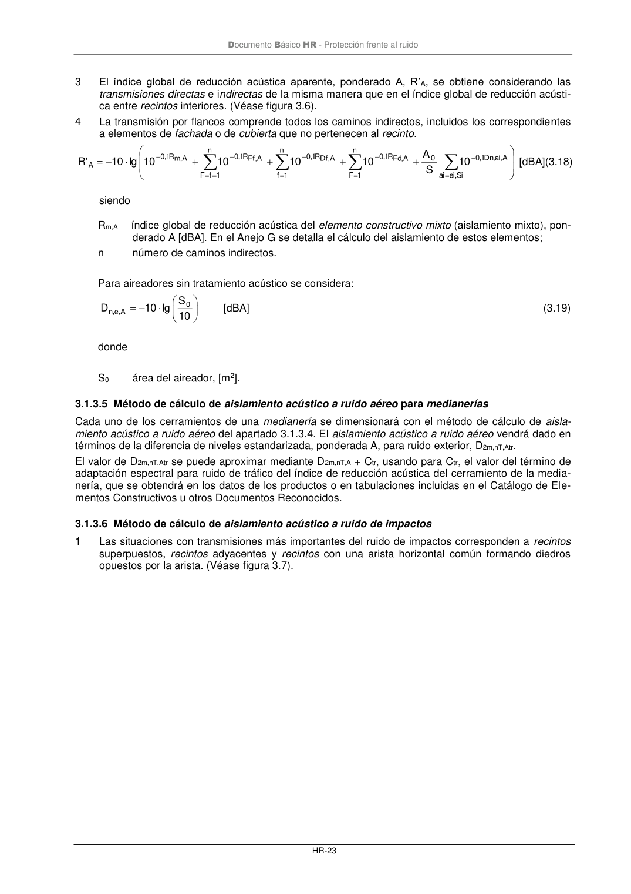
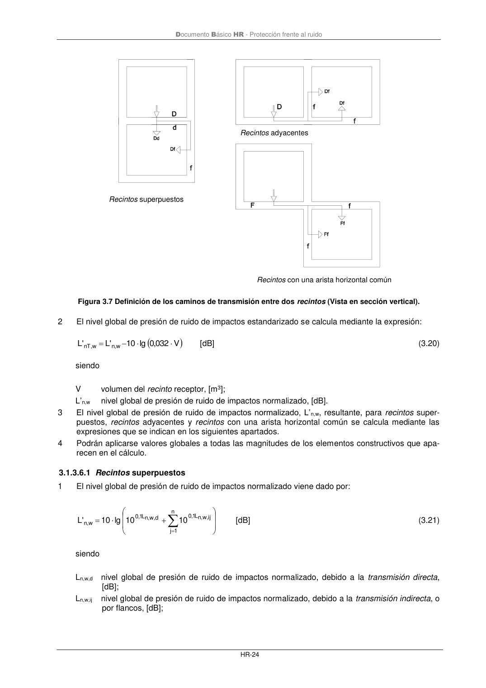

DB-HR Protección frente al ruido · edición 2019-12-20 · capa oficial
Documento DB-HR-oficial · SHA-256 del PDF a67baeca5138bb1f121f797d23a79a4557bd9ac4abacd954024893e05411eeab
Copia fiel del PDF fuente · Fuente oficial
Ficha de la disposición en la fuente oficial
Formatos: JSON del segmento · Markdown
= − = − = − = = − − Si , ei ai A , ai , Dn 1, 0 0 n 1 F A , Fd R 1, 0 n 1 f A , Df R 1, 0 n 1 f F A , Ff R 1, 0 A , m R 1, 0 A 10 S A 10 10 10 10 lg 10 ' R [dBA](3.18) siendo Rm,A índice global de reducción acústica del elemento constructivo mixto (aislamiento mixto), pon- derado A [dBA]. En el Anejo G se detalla el cálculo del aislamiento de estos elementos; n número de caminos indirectos. Para aireadores sin tratamiento acústico se considera: − = 10 S lg 10 D 0 A , e ,n [dBA] (3.19) donde S0 área del aireador, [m2]. 3.1.3.5 Método de cálculo de aislamiento acústico a ruido aéreo para medianerías Cada uno de los cerramientos de una medianería se dimensionará con el método de cálculo de aisla- miento acústico a ruido aéreo del apartado 3.1.3.4. El aislamiento acústico a ruido aéreo vendrá dado en términos de la diferencia de niveles estandarizada, ponderada A, para ruido exterior, D2m,nT,Atr. El valor de D2m,nT,Atr se puede aproximar mediante D2m,nT,A + Ctr, usando para Ctr, el valor del término de adaptación espectral para ruido de tráfico del índice de reducción acústica del cerramiento de la media- nería, que se obtendrá en los datos de los productos o en tabulaciones incluidas en el Catálogo de Ele- mentos Constructivos u otros Documentos Reconocidos. 3.1.3.6 Método de cálculo de aislamiento acústico a ruido de impactos 1 Las situaciones con transmisiones más importantes del ruido de impactos corresponden a recintos superpuestos, recintos adyacentes y recintos con una arista horizontal común formando diedros opuestos por la arista. (Véase figura 3.7). Documento Básico HR - Protección frente al ruido HR-24 Figura 3.7 Definición de los caminos de transmisión entre dos recintos (Vista en sección vertical). 2 El nivel global de presión de ruido de impactos estandarizado se calcula mediante la expresión: ( ) V 032 ,0 lg 10 'L 'L w ,n w , nT − = [dB] (3.20) siendo V volumen del recinto receptor, [m3]; L’n,w nivel global de presión de ruido de impactos normalizado, [dB]. 3 El nivel global de presión de ruido de impactos normalizado, L’n,w, resultante, para recintos super- puestos, recintos adyacentes y recintos con una arista horizontal común se calcula mediante las expresiones que se indican en los siguientes apartados. 4 Podrán aplicarse valores globales a todas las magnitudes de los elementos constructivos que apa- recen en el cálculo.

